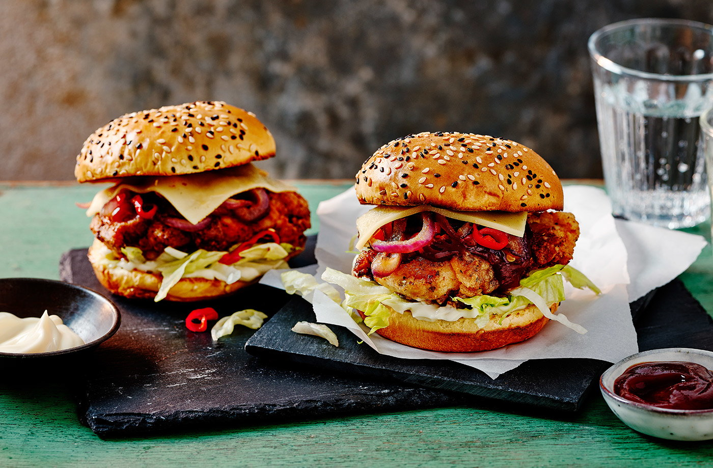

Buttermilk chicken burger recipe

Ingredients
- 4 boneless, skinless chicken thighs (roughly 500g)
- 250ml buttermilk
- 1 tbsp rapeseed oil, plus enough for deep frying
- 1 red onion, finely sliced
- 2 red chillies, finely sliced
- 50g cornflour
- 50g plain flour
- 1 tsp cayenne pepper
- 1 tsp onion powder
- 1 tsp dried basil
- 4 seeded brioche buns, sliced
- 3 tbsp mayonnaise
- ½ iceberg lettuce, finely sliced
- 3 tbsp barbecue sauce
- 4 slices Gouda cheese
Method
- In a large bowl, mix the chicken seasoning until well combined then stir in the chicken to evenly coat.
- Once seasoned, add the buttermilk, making sure the thighs are well covered. For the best results, leave overnight, but if this is not possible, leave to marinate for a minimum of 2-4 hours. Allow the chicken thighs to get to room temperature before cooking.
- When you are ready to cook, add 1 tbsp of oil to a pan over a medium heat then add the red onion and chillies and allow them to cook down and soften. This should take 6-8 mins.
- Mix the corn flour, plain flour, cayenne pepper, onion powder, garlic granules and dried basil together until well combined.
- Fill a deep-set frying pan, or cast-iron skillet fill with 10cm of oil and heat to 165°C. You can also use a deep fryer for optimal temperature control.
- One by one, coat each thigh in the flour, making sure the thigh is fully floured. Leave on a wire rack while you flour each thigh.
- Gently place the thigh in the oil by laying it into the oil away from you. If using a pan or cast-iron skillet, cook on each side for 5-6 mins. If using a deep fryer, cook for 6-8 mins.
- You can use a food probe to check the thigh is cooked all the way through. You should aim for 87°C-90°C to know it's cooked. If you don't have a probe, use a skewer to pierce the meat to check that the juices run clear. If juices are still pink, cook for a few mins more. Once cooked, leave to rest on a rack.
- Heat the grill to medium and toast the buns until golden.
- Now build the burger. Add mayo on the bottom bun, then add shredded lettuce. Place the chicken on top, and then the onions and chillies. Top with a generous dollop of barbecue sauce and then place a slice of Gouda on top.
- Leave under the grill for 1-2 mins to allow the cheese to melt.
- Place the top bun on and enjoy.